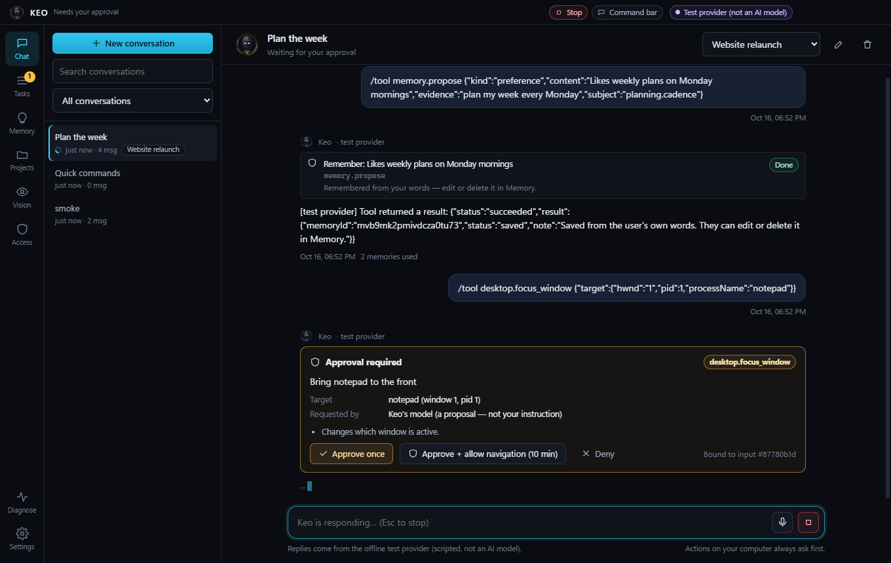

Works in your apps — with permission
Allow only the apps you choose. Keo clicks, types and reads through Windows accessibility and checks the result. Every action asks first unless you pick a hands-free level.
Keo chats, researches the web, remembers what matters to you and — only when you allow it — works in your apps: writes in Notepad, reads the page you are on, keeps a WhatsApp conversation going until you say stop.
No account needed. Bring your own AI key (OpenRouter, OpenAI, Anthropic) or use a free local model.

Allow only the apps you choose. Keo clicks, types and reads through Windows accessibility and checks the result. Every action asks first unless you pick a hands-free level.
“Reply to John and keep the conversation going.” Keo answers for you and stops to ask about prices, payments, meetings or anything personal.
Web search with links, page summaries, and “explain what I selected” in your browser. No invented prices.
Keo remembers facts you confirm and keeps project notes, all stored on your computer.
Say “Hey Keo” (processed on your PC) or press Ctrl+K anywhere for a quick command.
One Stop button halts replies, actions and live chats. Everything Keo does is listed in Tasks and the audit log.
Keo-Setup.exe. Because this beta is not code-signed yet, Windows shows “Windows protected your PC”: click More info → Run anyway.No. There is no Keo account and no Keo server. Your conversations, memory, settings and keys stay on your PC. Messages go only to the AI provider you connect (and to Brave Search if you enable web search). Keo checks GitHub once a day for a newer version — you can turn that off. Privacy note
Keo itself is free during the beta. AI providers charge for usage on your own key; local models are free.
The beta is not yet code-signed, so Windows does not recognise the publisher. Signed builds come with a later version.
Not by default. Using your apps is off until you allow specific apps, and every action asks for approval. You can choose “Ask only for important things” or “Hands-free”, but payments, deleting, sensitive buttons and messaging people you didn't name always ask.
From version 1.1 Keo updates itself: the new version downloads in the background and installs when you close Keo (or click Restart to update). Your data and settings are kept. Older versions show an Update available button — install 1.1 once by hand.